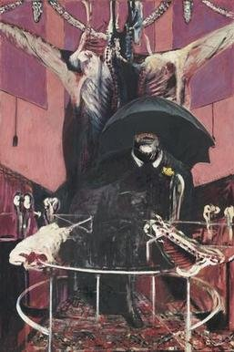

Painting 1946
Francis Bacon · 1946 · Oil on linen · 198 × 132 cm · Museum of Modern Art, New York
In copyright. Look and learn: shown for study, not for download.
Bacon began this canvas as a chimpanzee in long grass, then tried to turn it into a bird of prey landing in a field. Erica Brausen bought it from his studio in the autumn of 1946 for £200, and within a fortnight he had used the money to leave London for Monte Carlo. Alfred Barr bought it for the Museum of Modern Art in 1948. It is now too fragile to leave the museum for exhibitions elsewhere.